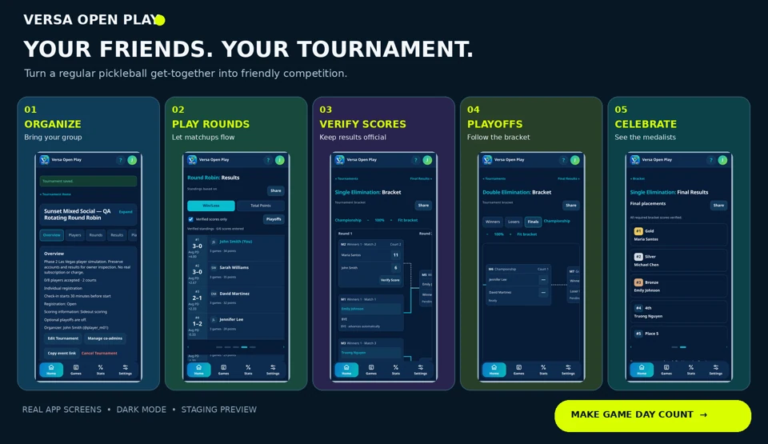

The tournament format guide
Find your format.
Make game day yours.
A social partner rotation, a court-climbing challenge or a championship bracket? Start with how you want people to play, then choose how the event finds its winners.
Staging / tester phase · Reviewed October 22, 2026. Available combinations depend on the event’s division, registration structure and settings.
Five formats at a glance
| Format | The idea | A good fit for… |
|---|---|---|
| Round Robin | Cover a cycle of pairings; rotating doubles changes partners. | A group that values playing a range of people. |
| Random Draw | Draw matchups for the configured preliminary rounds. | A social event with a planned number of rounds. |
| King of the Court | Eight rotating players across High and Low Court, with movement after verified cycles. | Eight friends using two courts. |
| Single Elimination | Winners progress; one loss ends championship contention. | A direct path through a championship bracket. |
| True Double Elimination | A first loss sends an entry into the Losers Bracket; a second eliminates it. | A bracket event that offers a second chance. |
Fixed partners or rotating partners?
Fixed partners
You enter as a team and keep the same partner. Capacity is counted in teams for fixed doubles. A registered partner must accept their own invitation; selecting someone is not consent on their behalf.
Rotating partners
You register as an individual. Partners change across preliminary games, and standings rank individual players. Scheduling prioritizes participation balance and new partners/opponents where feasible; it cannot promise every possible combination in a short event.
Singles uses individual registration and one player per side. Supported divisions include Men’s, Women’s and Open Singles, plus the offered doubles divisions. Mixed Doubles requires eligible mixed pairs; Mixed Gender / Open Doubles permits any gender pairing. Check the options and eligibility shown in your event.
Round Robin
For singles or fixed teams, a full round-robin cycle schedules each pairing once before repeats. With rotating doubles, partners and opponents change, with balance favored where possible. You can choose a limited number of court rounds instead of a full cycle.
What players experience
- A sequence of scheduled games rather than immediate elimination.
- Fixed partners stay together; rotating entries build an individual record.
- Multiple courts can play at once, with sit-outs shown where needed.
How it finishes
Use verified preliminary standings, or supported optional single- or double-elimination playoffs. Organizers review qualifiers and seeds before confirming a playoff draw.
Plan the workload. Eight singles players or eight fixed teams in a full cycle means 28 matches total and seven per entry. Maximum Rounds counts court waves, not necessarily games per player. The app requests extra confirmation when an actual generated schedule gives anyone more than six preliminary games.
Random Draw
Use drawn matchups over the configured preliminary rounds instead of aiming to complete every pairing in a full round-robin cycle. This gives an organizer a way to run a social competition around a selected round count.
What players experience
Players follow the saved draw’s court assignments. A configured fixed-team structure keeps partners together; rotating structures change them. Check the actual schedule, especially with uneven attendance or limited courts.
How it finishes
Review preliminary Results and, when enabled, create supported elimination playoffs after the required scores are verified. A saved generated draw persists across refreshes; reloading does not create new matchups.
Round Robin vs Random Draw: a full fixed-team/singles round robin targets every pairing in a cycle. Random Draw targets the configured set of drawn rounds. Neither label means each player is guaranteed the same opponent mix in every field size.
King of the Court
Exactly eight rotating doubles players compete on High Court and Low Court. Four players start on each court. Each cycle has three partner combinations per court, making six games across the two courts.
- Review the starting courts.
The organizer saves the initial assignments before generating games. Optional tournament ratings, when enabled, are separate organizer-published event values; they do not change a player’s Profile rating or import an external service.
- Play and verify the cycle.
Everyone on a court partners with each of the other three players once in that cycle. All six scores must be entered and verified before movement is available. Unverified scores do not count in KOTC standings.
- Review court movement.
The organizer reviews the eligible movement and resolves any required ties. The next configured cycle then uses the reviewed courts.
- Finish the configured event.
Without a championship round robin, final standings use the regular cycles. When Include Championship Round Robin is enabled, H1, H2, L1 and L2 play a separate three-game rotating round robin on High Court, starting its scores at zero.
King of the Court has no elimination playoffs. Its optional championship round robin is a different finish from a single- or double-elimination bracket.
Single Elimination
The main bracket is the competition. Verified winners move into the next round. An entry’s first loss ends its path to the championship; a placement match may still be available under the event’s rules.
Seeds and byes
Organizers can set optional seeds before generation. Lower seed numbers receive priority; tied seeds are randomized in the saved draw. Byes advance an entry automatically without a played game, score or win.
Finals and placements
The championship decides Gold and Silver. Bronze handling depends on field size and the configured placement match. The event still needs an authorized final review and completion.
A main Single Elimination event does not add a separate preliminary-to-Playoffs stage. The same bracket style may instead be selected as optional playoffs after a supported Round Robin or Random Draw event.
True Double Elimination
An entry starts in the Winners Bracket. Its first actual loss sends it to the Losers Bracket; its second eliminates it. The winners of those two paths meet for the championship.
The two paths
The Winners and Losers sections show different routes into the Finals. The Losers Bracket Final loser earns Bronze. The undefeated finalist arrives at the Grand Final without a loss.
Why there can be a reset
If the Losers Bracket champion wins the first Grand Final, both finalists now have one loss. A second game—the Grand Final Reset—is required so the eventual runner-up has two actual losses.
Example: Team A reaches the final undefeated. Team B arrives with one loss. If A wins, the event has a champion. If B wins, A has only its first loss, so A and B must play the reset. Verified reset results decide Gold and Silver.
A required reset is not an optional extra match, and byes never count as losses or played wins. Only verified deciding scores confirm advancement and final medals.
Preliminary rounds vs playoffs
Round Robin and Random Draw can have a preliminary stage followed by optional elimination playoffs. Preliminary Results rank eligible players or teams; the organizer reviews qualifiers, seeds and pairings before creating the playoff bracket.
For rotating doubles, qualifiers are individuals who are formed into fixed playoff teams. Those pairs play together through the playoff bracket. Supported qualifier counts depend on the event’s entry structure and capacity.
Main Single/Double Elimination already runs as a bracket. King of the Court uses its own verified-cycle movement and optional championship round robin. These formats do not follow the same preliminary-to-Playoffs sequence.


What keeps the event moving?
- Consent, eligibility and attendance.
Invitations, acceptance, claimed identity and check-in are separate. Resolve them before finalizing. Admitted guest proxies may remain unclaimed when allowed by the event.
- One saved schedule.
Generate after roster review. Check court waves and sit-outs. Once competition starts, roster/schedule changes are protected; manual schedule editing and explicit injury/forfeit handling remain pending.
- Verified scores.
Claimed participants can enter their game scores. Eligible opposing players or authorized organizers/co-admins can verify. Unclaimed proxies cannot perform account actions. Only verified results confirm bracket advancement.
- Results and reviewed completion.
Results provides the event’s standings. Submitted tournament scores need a winner; scoring style and target are descriptive rather than an enforced target/win-margin validator. Final Results can be provisional. A permitted director reviews outstanding items and confirms COMPLETE to finish the tournament.
Creating, managing, watching or sharing an event does not register you to play. Tournament mode does not itself unlock full historical access, and no real subscription charge is created by the staging plan simulator.